|
|

|
223 Physics Lab: Magnetic Force due to a Current-carrying Wire
|
223 & 224 Lab Overview |
Return to Physics 223 Labs
Purpose
The purpose of this lab experiment is to investigate the magnetic force of a
current-carrying wire. In this experiment we will investigate the effects of
current, length of wire and magnetic field strength on the magnetic force.
Background
If a charged particle moves with some velocity,
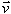 ,
through a uniform magnetic field,
,
it experiences a magnetic force given by
where
,
is the charge of the particle. If the angle between the particle's
velocity vector and the direction of the magnetic field is
,
the magnitude of the magnetic force may be rewritten as
The direction of the magnetic force vector may then be found with the
familiar right-hand rule. Notice that the magnitude of the force is
a maximum when
and is identically zero when
.
Figure 1 shows two charged particles entering a uniform magnetic field
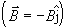 .
The velocity vector of each particle is given as
,
indicating that both velocity vectors are perpendicular to the
direction of the magnetic field. Therefore the quantity
becomes
,
or
in the upward direction, for both particles. However, from Equation 1
we see that the direction of the magnetic force depends on the
charge of the particles. As Figures 2 and 3 show, the positively
charged particle experiences an upward force,
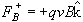 ,
while the negatively charged particle experiences a downward force,
.
The manifestation of these magnetic forces is shown in Figure 1 by the
upward deflection of the positively charged particle and the downward
deflection of the negatively charged particle.
| |
|
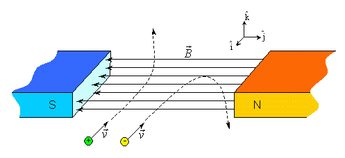
|
|
Figure 1. Two charged particles travel with some velocity,
,
through a uniform magnetic field,
.
As the charges pass through the magnetic field,
each experiences a magnetic force,
,
due to their velocity, the direction and strength of the magnetic
field and their charge,
.
Note that here the positive charge experiences an upward magnetic
force and the negative charge experiences a downward force.
|
| |
| |
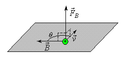
|
|
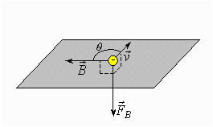
|
|
|
Figure 2. As shown in Figure 1, this positively charged particle
experiences an upward magnetic force.
|
|
Figure 3. As shown in Figure 1, this negatively charged particle
experiences a downward magnetic force.
|
|
Figure 4 shows a segment of wire carrying a current
that is located within a uniform magnetic field,
.
The force on each charged particle is given by
where
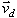
is the drift velocity of the charged particles. The volume of the wire
that exists within the magnetic field is
,
where
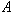
is the wire's cross-sectional area and
is the length of wire that is embedded within the magnetic field. If we define
to be the number of charged particles per unit volume, at any instant there are
charges within that segment of wire. Therefore from Equation 3, we can
write the magnetic force on a wire of length
as
Since the current flowing in a conductor is given as
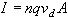 1,
the above equation becomes
where
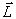
is the vector length of wire that points in the direction of the current
.
Note that the direction of the current is defined as the direction
in which positive charges move.
| |
|
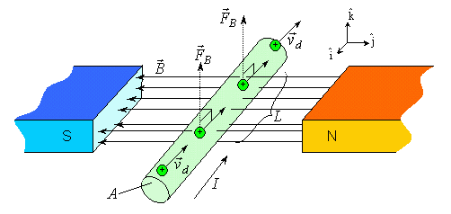
|
|
Figure 4. A representation of charged particles,
with some drift velocity,
,
flowing through a wire of which a portion of its length,
,
is embedded in a uniform magnetic field,
.
The wire has uniform cross-sectional area,
.
When the charges pass through uniform magnetic field
they experience a magnetic force,
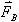 ,
as described in the text. The total magnetic force on the
wire is
,
where
is the current in the wire. Here
,
where
is the number of particles with charge,
.
|
Our experimental setup is shown in Figure 5 and is described as follows.
A permanent magnet assembly, comprised of six removable horseshoe magnets,
is placed on a triple-beam balance, and the balance is then zeroed.
A variable current source is connected to the current balance assembly,
which has at one end a removable wire loop etched onto a circuit board.
This wire loop is then placed into the permanent magnet assembly so the
wire loop is perpendicular to the magnetic field but is not touching the magnets.
Then, when a current flows through the wire loop, a magnetic force is created.
Since the wire loop is stationary the magnetic force acts on the permanent
magnet assembly causing its weight to either increase or decrease depending
on the direction of the current and the orientation of the magnetic field.
The change in the magnet assembly's weight is due to the magnetic
force given by Equation 5.
| |
|
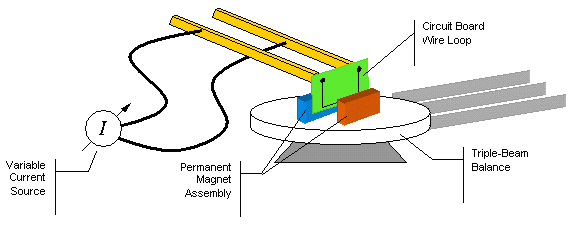
|
|
Figure 5. The experimental setup. A magnetic force is
created when a current passes through the circuit board wire loop.
This force acts on the permanent magnet assembly causing a
change in its weight. The change in the magnet assembly's
weight is directly proportional to the magnetic force.
|
Three parameters may be altered in this experiment, and they are as follows:
- The length of wire may be varied by exchanging one wire
loop for another.
- The current amplitude may be varied by adjusting the output
from the power supply. (The direction of the current flow may also be altered.)
- The strength of the magnetic field may be altered by varying
the number of horseshoe magnets in the magnet assembly.
(The direction of the magnetic field may also be altered.)
As with all physics laboratory experiments, one must be careful to use the
appropriate units. If all forces (i.e., the magnetic force and weight)
are measured in newtons
(),
charges in coulombs
(),
and velocities in meters per second
(),
then from Equation 1 the unit of the magnetic field is given as
newton per coulomb-meter per second. In SI units this is known as
the tesla
()
where
If the current flow is measured in amperes
(),
then the tesla unit can be shown to be
It should be noted that magnetic field strength is often given in
units of the gauss
(),
where
.
Table 1 shows magnetic field strengths of various bodies
given in units of tesla and gauss.
Table 1
|
Magnetic Field Strengths of Various
Bodies
|
|
Field Source
|
Field Strength
(T)
|
Field Strength
(G)
|
|
Superconducting magnet
|
30
|
3x105
|
|
Strong demonstration magnet
|
2
|
2x104
|
|
Medical MRI unit
|
1.5
|
1.5x104
|
|
Typical bar magnet
|
0.01
|
100
|
|
Surface of the Sun
|
0.01
|
100
|
|
Surface of Earth
|
0.5x10-4
|
0.5
|
|
Human brain
|
10-15
|
10-11
|
- See Serway and Beichner, page 910.
Objectives
- Use the magnetic force apparatus to verify that the magnetic force due to a
current-carrying wire immersed in a perpendicular uniform magnetic field
is proportional to each of the following parameters:
- length of the wire
- electrical current flowing in the wire
- magnitude of the magnetic field
Equipment and setup
- (Figure 6.) The experimental setup. Note the current in the
wire is 2.26A.
- (Figure 7.) Permanent magnet assembly with six
horseshoe magnets. Two of the horseshoe magnets are on the
table top.
- (Figure 8.) Three of six interchangeable circuit board
wire loops. Notice the right-most wire loop is printed on the
front and back of the circuit board, effectively doubling
the length of the wire shown on one side. Be careful when
removing and inserting these somewhat fragile circuit boards.
- (Figure 9.) A close-up of a wire loop inserted into the
permanent magnetic assembly.
- (Figure 10.) The triple-beam balance.
- (Figure 11.) The variable current source. See the
Hints and Cautions section for instructions
on producing a constant current.
- (Figure 12.) Use the power supply's digital ammeter to
measure the current.
- Vernier caliper
- Lab stand
- Banana cords
|
[Click on images to enlarge.]
|
Hints and Cautions
- Caution!!! Do not touch the metal arms of the circuit board
holder while current is flowing through them!
- Caution!!! Be careful with the small etched circuit boards when
inserting and removing them -- they can break easily!
- Caution!!! Keep the current below 5A throughout the experiment!
- The power supply should be set to constant current mode. To do so,
turn the DC VOLTAGE ADJUST knob fully clockwise, then adjust the DC
CURRENT ADJUST knob to obtain the desired output current.
Online Assistance
- xxx
- Adding a trendline
to an Excel plot
- Adding a non-linear
trendline to an Excel plot
- Create plots of two
data series on one graph
- Fitting multiple
curves (trendlines) to one data set
- Clemson Physics Lab Tutorials
- Measurement
uncertainties
- Using Excel
- Graphing data
using Excel
- Using error
bars in Excel
Lab Report Template
Each lab group should
download the Lab Report Template
and fill in the relevant information
as you perform the experiment. Each person in the group
should print-out the Questions section and answer them individually.
Since each lab group will turn in an electronic copy of the lab report,
be sure to rename the lab report template file. The naming convention is as
follows:
[Table Number][Short Experiment Name].doc.
For example the group at lab
table #5 working on the Ideal Gas Law experiment would rename their template file
as "5 Gas Law.doc".
Nudge Questions
These Nudge Questions are to
be answered by your group and checked by your TA as you do the lab. They
should be answered in your lab notebook.
General Nudges
- How will you verify that the magnetic force is proportional
to each parameter.
- How many "experiments" must you perform to verify the relationship
?
- What is the direction of
?
- What is the direction of the current, or
?
- In this experiment, what should the relationship be between the direction of
and
?
- What is the direction of
relative to the directions of
and
?
- How will you use the triple-beam balance to measure the magnetic force,
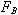 ?
- Is it important that the triple-beam balance be properly zeroed before
the experiment begins? Why or why not?
- How will you insert the circuit-board wire loops into the permanent magnet
assembly? Is the orientation and position of the wire relative to the
magnets important?
- How did you measure the length of the wire? Did you measure the
entire length of the conductor?
Objective 1: Part A Nudges
- For this part, which experimental parameters will you hold constant and
which will you vary?
- Which length(s) of wire will you use for this experiment?
- How many magnets will you use for this experiment? Why?
- What current value(s) will you use for this experiment? Remember not to
exceed 5A!
- What is the magnitude of the magnetic field used in this experiment?
Objective 1: Part B Nudges
- For this part, which experimental parameters will you hold constant and
which will you vary?
- Which length(s) of wire will you use for this experiment? Why?
- How many magnets will you use for this experiment? Why?
- What current value(s) will you use for this experiment? Remember not to
exceed 5A!
- What is the magnitude of the magnetic field used in this experiment?
- How does the magnetic field strength in this experiment compare to
that of Part 1?
Objective 1: Part C Nudges
- For this part, which experimental parameters will you hold constant and
which will you vary?
- Which length(s) of wire will you use for this experiment? Why?
- Does the wire length affect the results?
- How many magnets will you use for this experiment? Why?
- What current value(s) will you use for this experiment? Remember not to
exceed 5A!
Questions
These Questions are also found in the lab write-up template. They must be answered by
each individual of the group. This is not a team activity. Each person should
attach their own copy to the lab report just prior to handing in the lab to your
TA.
Describe how your observations would change if the direction of the
current were in the opposite direction.
Describe how your observations would change if the permanent magnetic
assembly were rotated 180° that is, if the direction of the magnetic field
was in the opposite direction.
Show that it is only the horizontal portion of the circuit board wire
that contributes to the vertical magnetic force. In other words, show that the
vertical portion of the wire does not vary the weight of the magnet assembly.
From your results in Part C, what can be said about the relative strengths
of each horseshoe magnet?
What was the magnetic field strength of the permanent magnet assembly
with all six horseshoe magnets installed? Is this a reasonable value?
From your observations of the triple-beam balance and the current
readings, show that the red end of the horseshoe magnet is the "north" end.
Estimate the maximum possible magnetic force contributed by the earth's
magnetic field,
,
to these experiments. Assume
exists in the plane parallel
to the earth's surface. What can be done with the experimental apparatus to
eliminate this contribution?
Is this experimental setup sensitive enough to measure the earth's magnetic field,
?
If not, what can be done to make this measurement possible?
TA Notes
- This lab was designed as a one-week experiment. Expectations regarding the
length and quality of the written lab report should be lowered.
Essentially, students should work efficiently and quickly to solve the
Objectives, and succinctly report on their findings.
- Store the magnets in pairs, with N poles attached to S poles!
Data, Results and Graphs
Lab Manual
CUPOL Experiments
As of now, there are no
CUPOL experiments
associated with this experiment.
If you have a question or comment, send an e-mail to Lab Coordiantor:
Jerry Hester
223 & 224 Lab Overview |
Return to Physics 223 Labs
|
|